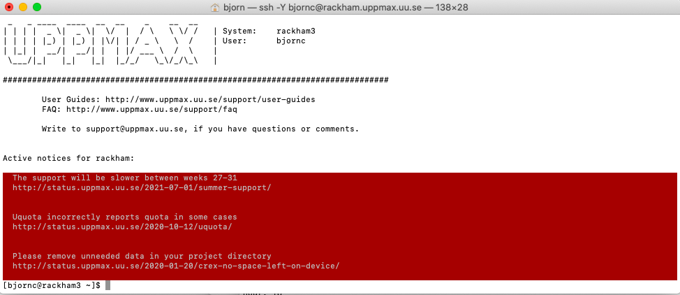
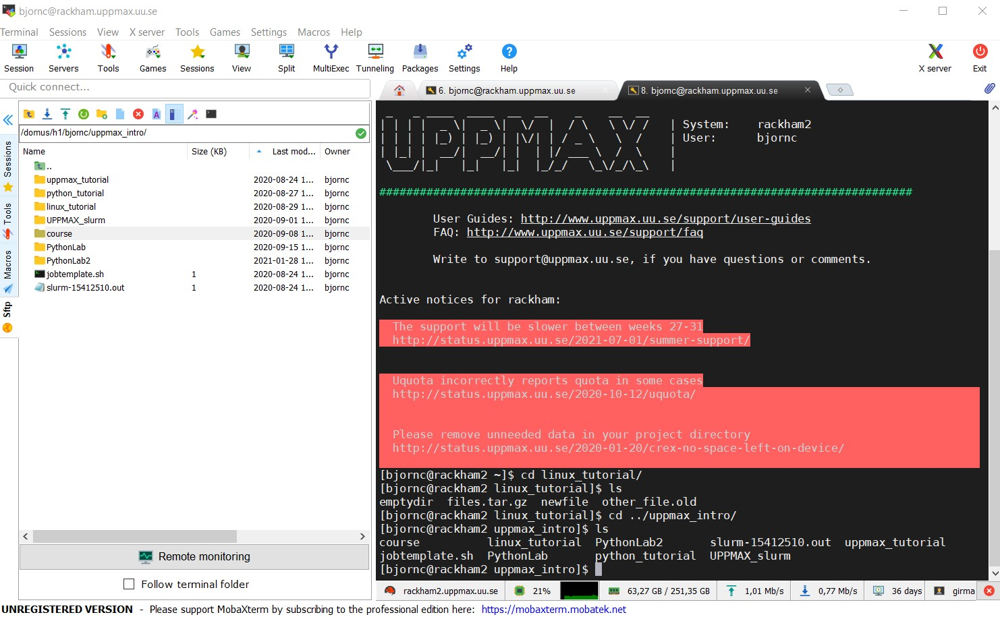
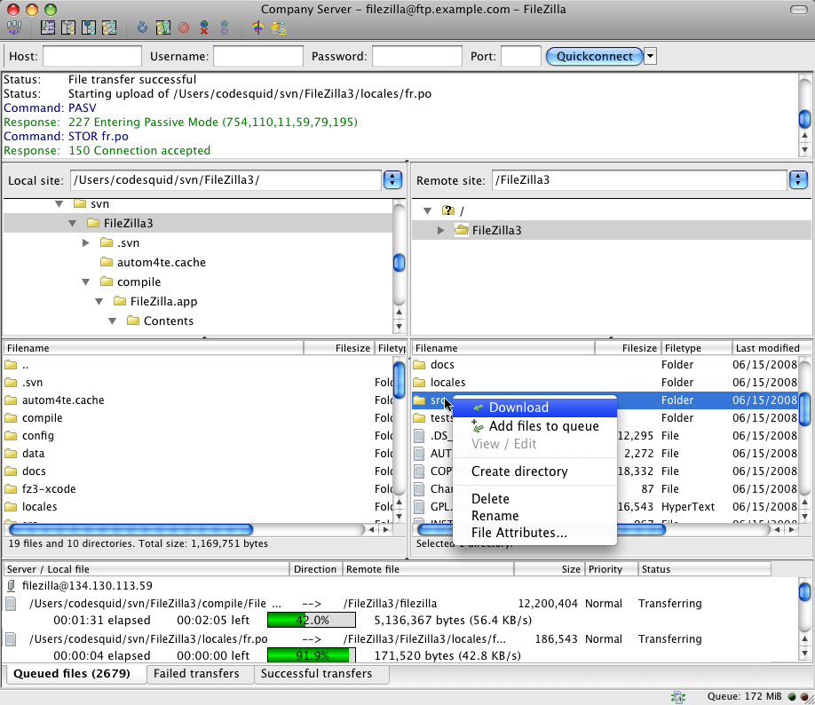

Login
Questions
How to reach UPPMAX clusters?
Where do I arrive when I log in? Login or calculation node?
What clients should/could I use for my work at UPPMAX?
How can I enable graphics?
Objectives
We’ll go through platform specific (Mac/Linux/Windows) ways to log in to UPPMAX
See different clients
Enable graphics
Try yourself!
Note
If you lack a user account, visit the Getting started page
The login
Login procedure
Which login procedure is best for You, depends on:
Your background
Your OS environment,
Your planned interaction with your local computer
Your planned use of graphics on the cluster
Login procedure
If you plan to:
do day-to-day work where terminal shell is sufficient
Mac: Terminal, iTerm2
Linux: Terminal
Windows: Putty, Windows Powershell or even command prompt (CMD)
interact with you local computer
Mac/Linux: you can always work in a local shell (mutiple terminal windows open)
(S)FTP browser: Filezilla, Cyberduck
Windows
(S)FTP browser: WinSCP
MobaXterm has built-in SFTP browser
you may benefit from having a Windows Subsystem for Linux, WSL(2)
do day-to-day work with some graphical applications (X forwarding)
Mac: Terminal, iTerm2 + XQuartz
Linux: Terminal
Windows: MobaXterm
integrate you cluster work with code development
All OS: Example Visual Studio Code
use sophistic graphical interfaces like RStudio and MATLAB etcetera
ThinLinc application
use Bianca
ThinLinc from web
General understanding
When logging in to UPPMAX from your local computer you will arrive to your home folder at the login node.
This means that only light analysis and and calculations should be made here.
You will see this in the prompt after “@” as the clustername and a low number. For instance:
[<user>@rackham3 linux_tutorial]$You will later learn how to reach the calculation nodes. Then the prompt states the node number with a single letter, like “r” for Rackham. For instance:
[<user>@r484 linux_tutorial]
Terminals
Start terminal (e.g. from Launchpad) or iTerm2
$ ssh <username>@rackham.uppmax.uu.se
“< >” prompts you to set the keyword specific for you or your needs. In the example above, this is basically your username.

iTerm2 goodies:
You can save hosts for later.
Drag and drop scp
Start terminal (see below)
$ ssh <username>@rackham.uppmax.uu.se
“< >” prompts you to set the keyword specific for you or your needs. In the example above, this is basically your username.

the ssh (secure shell) client putty is sufficient first days of the course!
You can save hosts for later.
No graphics.
Windows Powershell terminal can also work
Cannot save hosts
no graphics
Windows command prompt can also work
Cannot save hosts
no graphics
Terminal with X11 server and light graphics
Download XQuartz or other X11 server for Mac OS
Start terminal (e.g. from Launchpad) or iTerm2
$ ssh -Y <username>@rackham.uppmax.uu.se
-XEnables X11 forwarding.-YEnables trusted X11 forwarding
Download and install ONE of the X-servers below (to enable graphics)
or…
Install a ssh (secure shell) program with built-in X11 and sftp file manager
-
sftp frame makes it easy to move, upload and download files.
… though downloading from remote host to local is usually easier.
tabs for several sessions
-

Start local terminal and a SSH session by:
$ ssh -Y <username>@rackham.uppmax.uu.se

Or even better, create and save a SSH session, as shown in image below.
This allows you to use MobaXterm as a file manager and to use the built-in graphical texteditor.
You can rename the session in the Bookmark settings tab.

X11-forwarding from the command line (generally)
Graphics can be sent through the SSH connection you’re using to connect
Use primarily
ssh -Y <...>or secondaryssh -X <...>
The X servers that enables graphics are needed, as mentioned above!
When starting a graphical program, a new window will open, but your terminal will be “locked”.
Run using “
&” at the end to run it as a background process e.g. “xeyes &” or “gedit &”

Alternatively, use
<ctrl>-zto put e.g. gedit to sleep and type “bg” to make last process in background.
Login to Rackham, using your terminal
First try:
$ ssh -Y <username>@rackham.uppmax.uu.se
If you receive errors or warnings, instead try:
$ ssh <username>@rackham.uppmax.uu.se
If you do have X11 installed:
$ xeyes &
Graphical file manager
This is good if you want to move many files between host and local and cannot use wildcards.
For copying of files with sftp (secure file transfer protocol) between your client computer (where you are) and the cluster Filezilla can be the choice.

For copying of files between your client computer (where you are) and the cluster WinSCP can also be the choice.

Problems with installations?
Putty/Terminal without X11 is sufficient first days of the course!
Linux on your computer
Local Linux environment
You may sometimes benefit from having a local Linux environment.
Examples:
Mimic cluster environment to work with your local files and data as on the Cluster
get used to Linux (!)
Mac is UNIX and very Linux-like
Windows requires WSL (Windows subsystem for Linux)
For windows users who wants to get started with WSL (not covered here)
Install WSL (Windows Subsystem for Linux)
https://docs.microsoft.com/en-us/windows/wsl/install-win10 (Links to an external site.)
Don’t forget to update to wsl2
Install a distribution or a ssh (secure shell) program
Distribution such as ubuntu or
(recommended) a ssh program such as MobaXTerm
https://mobaxterm.mobatek.net/ (Links to an external site.)
sftp frame makes it easy to move, upload and download files.
You may want to check this webpage as well!
https://hackmd.io/@pmitev/Linux4WinUsers (Links to an external site.)
Visual Studio Code (not covered in course)
Intergrate you cluster work with code development
Remote development using Visual Studio Code on Alvis cluster
Similar to Rackham. Just change login details!
ThinLinc (all platforms!)
Both Rackham and Bianca offer graphical login.
This gives you a desktop environment, as if you were working on your own computer!
On web:

Or use the client (only for Rackham)
Try Thinlinc from web
Try the web version now if you don’t already have the software installed!
Keypoints
When you log in from your local computer you will always arrive at a login node with limited resources.
You reach the calculations nodes from within the login node (See Submitting jobs section)
You reach UPPMAX clusters either using a terminal client or Thinlinc
Graphics are included in Thinlinc and from terminal if you have enabled X11.
Which client to use?
Graphics and easy to use
ThinLinc
Best integrated systems
Visual Studio Code has several extensions (remote, SCP, programming IDE:s)
Windows: MobaXterm is somewhat easier to use.